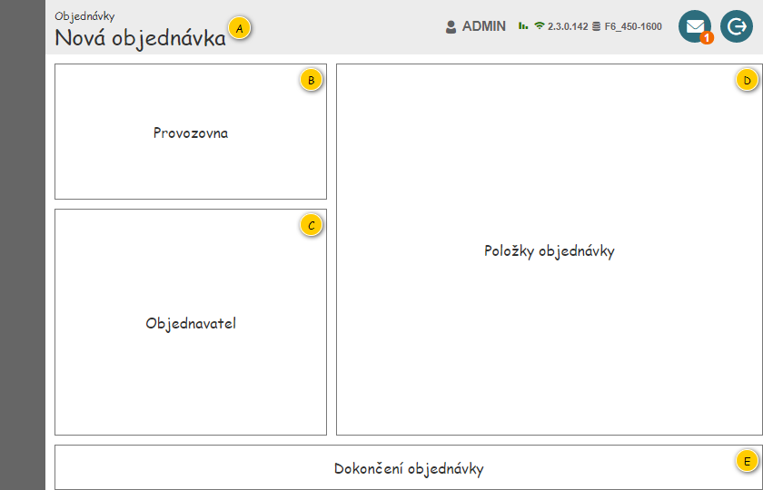
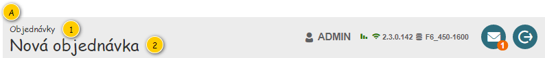
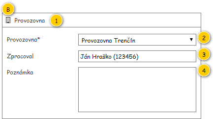
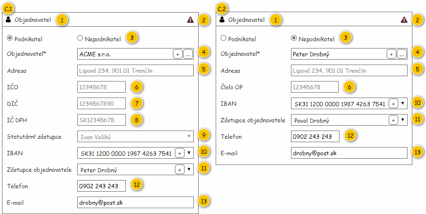
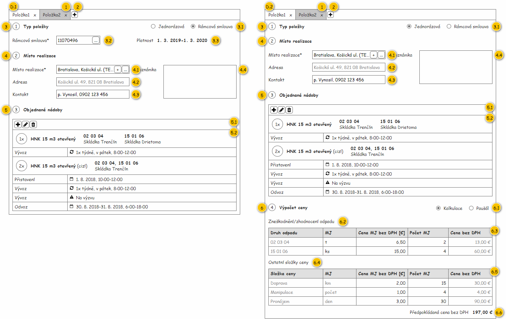
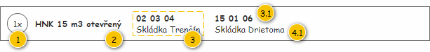
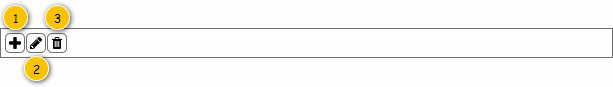
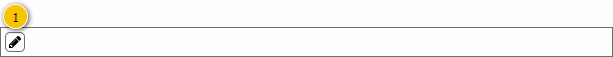
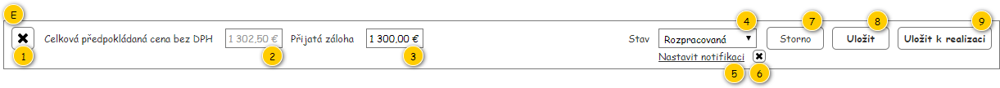

Formulář slouží k založení nové či editaci stávající Objednávky. Pokud zakládáme novou Objednávku, je formulář zobrazen ve výchozím stavu (s výjimkou případu, kdy jsou na vstupu předána vstupní data, která mají být načtena) – jsou dostupná pouze některá z polí formuláře, ostatní jsou následně zpřístupňována v rámci jeho vyplňování. Pokud editujeme existující Objednávku, je formulář zobrazen dle stavu této Objednávky – jsou zpřístupněna pouze taková pole, která je možné stále editovat.
Na vstupu formuláře jsou tedy předány následující hodnoty:
Poznámka: Na vstupní data je pak odkazováno v rámci popisu jednotlivých skupin.
Nutnou podmínkou pro zobrazení formuláře Objednávky je vlastnictví následujících oprávnění:
Formulář je pak složen z ucelených skupiny, které budou dále popsány. Tyto skupiny se vzájemně ovlivňují, po vyplnění hodnot v rámci jedné skupiny dojde například k zpřístupnění jiné skupiny formulář.
Poznámka: Jednotlivé barvy a ikony jsou uvedeny ve společné tabulce (viz Použité barvy a ikony), na kterou já v rámci dokumentu dále odkazováno.

| Callout | Skupina |
|---|---|
| A | Hlavička formuláře |
| B | Provozovna |
| C | Objednavatel |
| D | Položky objednávky |
| E | Dokončení objednávky |
Skupina slouží k identifikaci Objednávky, pro kterou je formulář zobrazen.

| Callout | Komponenta | Nadpis | Typ komponenty | Příklad hodnoty | Hodnota | Výchozí hodnota | Formát | Zpřístupněná | Viditelná | Chování | Validace | Poznámka |
|---|---|---|---|---|---|---|---|---|---|---|---|---|
| 1 | Nadpis modulu | – | Label | – | Pevně daný text:
| – | – | Vždy | – | – | – | |
| 2 | Identifikace objednávky | – | Label | TRE-000123 | Entita Objednávka. | Pevně daný text:
| Objednávka: <Číslo objednávky> Pokud není hodnota k dispozici (Objednávka zatím nebyla uložena do systému), je zobrazena výchozí hodnota. | – | Vždy | – | – | Zobrazená hodnota se liší dle toho, zda je Objednávky již uložena v systému. |
Skupina slouží především k výběru Provozovny, pro kterou je Objednávka vytvářena. Dále je uveden Zaměstnanec, který Objednávku vytvořil, spolu s interní poznámkou k Objednávce.

| Callout | Komponenta | Nadpis | Typ komponenty | Příklad hodnoty | Hodnota | Výchozí hodnota | Formát | Zpřístupněná | Viditelná | Chování | Validace | Poznámka |
|---|---|---|---|---|---|---|---|---|---|---|---|---|
| 1 | Nadpis skupiny | – | Label | – | Pevně daný text:
Nadpis je pak doplněn o ikonu: | – | – | Vždy | – | – | – | |
| 2 | Provozovna | Provozovna* | ComboBox | Provozovna Trenčín | Entita Provozovna.
| Vždy | Pokud není ovládací prvek zpřístupněn pro změnu hodnoty, jeho chování odpovídá komponentě typu TextBox v režimu pro čtení. | Povinné | Dostupné hodnoty a možnost editace odpovídají jak stavu Objednávky, tak Provozovnám, které má Uživatel zakládající Objednávku k dispozici. | |||
| 3 | Zakladatel objednávky | Zpracoval | TextBox | Ján Hraško (123456) | Entita Zaměstnanec – atribut Zaměstnanec entity Uživatel. Samotný Uživatel je pak získán dle „existence“ zobrazené Objednávky:
| – | Pokud není k dispozici Osobní číslo: V tomto případě nemůže nastat situace, že nebude k dispozici odpovídající Zaměstnanec. Ten je uložen v interní databázi modulu RP. Pokud uživatel nemá na konkrétního Zaměstnance právo (viz Oprávnění na instance entity), je zobrazen zástupný text:
Pokud není Zaměstnanec k dispozici, není zobrazena žádná hodnota. | Nikdy | Vždy | – | – | Při vytvoření Objednávky je odpovídající Uživatel získán na vstupu formuláře, po uložení je hodnota získána z konkrétní Objednávky. |
| 4 | Interní poznámka | Poznámka | MultilineTextBox | Doplnit kalkulaci ceny. | Entita Objednávka. | – | Uživatel má právo na editaci Objednávky (EDIT_RP_ORDERS, viz Oprávnění na typ entity). | Vždy | – | Maximálně 255 znaků. | – |
Provozovny dostupné v rámci ovládacího prvku, možnost změny hodnoty a nastavení výchozí hodnoty při načtení formuláře závisí na více faktorech, proto je chování popsáno samostatně. Základním faktorem je pak „existence“ zobrazené Objednávky.
Poznámka: Jednotlivá nastavení jsou pojmenována dle sloupců tabulky UI komponent, jejich význam je pak v tomto případě následující:
V případě, kdy je zakládána nová Objednávka, zatím není odpovídající Objednávka v rámci systému k dispozici. V takovém případě je ovládací prvek nastaven následovně:
Poznámka: V tomto případě má Uživatel vždy právo na editaci Objednávky (EDIT_RP_ORDERS, viz Oprávnění na typ entity), jinak by novou Objednávku nemohl založit.
V případě, kdy je editována již existující Objednávka, jsou data pro nastavení ovládacího prvku získána z této Objednávky – ta byla získána na vstupu formuláře. V takovém případě je ovládací prvek nastaven následovně:
Poznámka: V tomto případě nemusí mít Uživatel právo na editaci Objednávky (EDIT_RP_ORDERS, viz Oprávnění na typ entity).
Pokud dojde ke změně Provozovny (komponenta 2), je aktualizován celý formulář Objednávky.
Vzhledem k tomu, že změna Provozovny ovlivní značnou část formuláře, je nutné upozornit uživatele – je tedy uveden celý tok událostí:
Poznámka: Hodnoty jsou změněny pouze v rámci ovládacích prvků, jejich zanesení přímo do Objednávky je provedeno až po uložení.
Skupina slouží k nastavení Zákazníka, pro kterého je Objednávka vytvářena. Zákazník pak může být dvojího typu, dle toho se pak odvíjí i rozložení skupiny:

Význam některých komponent se liší dle typu Zákazníka (atribut Typ zákazníka), v takovém případě je tato informace uvedena právě dle uvedeného kritéria.
| Callout | Komponenta | Nadpis | Typ komponenty | Příklad hodnoty | Hodnota | Výchozí hodnota | Formát | Zpřístupněná | Viditelná | Chování | Validace | Poznámka |
|---|---|---|---|---|---|---|---|---|---|---|---|---|
| 1 | Nadpis skupiny | – | Label | – | Pevně daný text:
Nadpis je pak doplněn o ikonu: | – | Pokud jsou splněny všechny uvedené podmínky zároveň, je nastavena barva pozadí na Ostatní/Bonita (pozadí):
| – | Vždy | – | – | – |
| 2 | Bonita zákazníka | – | Ikona | – | Entita Zákazník, který je načten ve skupině Objednavatel. Pokud není Zákazník načten, je použita výchozí hodnota. | TRUE | V případě, kdy je hodnota rovna FALSE, je zobrazena ikona: Jinak není ikona zobrazena vůbec. | – | Pokud je hodnota rovna FALSE. | Po najetí myší na ikonu je zobrazen ToolTip s uvedeným textem: Objednavatel je v prodlení s platbou! | – | – |
| 3 | Typ zákazníka | – | RadioButton | Nepodnikatel | Entita Zákazník, který je načten ve skupině Objednavatel. Pokud není Zákazník načten, je použita výchozí hodnota. | Podnikatel | Uživatel má právo na editaci Objednávky (EDIT_RP_ORDERS, viz Oprávnění na typ entity). Pokud Objednávka zatím neexistuje (založení Objednávky) nebo je v jednom z uvedených stavů (atribut Stav):
| Vždy | Povinné. | Změna hodnoty se projeví jak v rámci této, tak i v dalších skupinách formuláře. | ||
| 4 | Zákazník | Objednavatel* | AutoSuggestTextBox (with add button) | ACME s.r.o | Entita Zákazník, který je načten ve skupině Objednavatel. Pokud není Zákazník načten, je použita výchozí hodnota. | – | Uživatel má právo na editaci Objednávky (EDIT_RP_ORDERS, viz Oprávnění na typ entity). Pokud Objednávka zatím neexistuje (založení Objednávky) nebo je v jednom z uvedených stavů (atribut Stav):
| Vždy | Povinné, pokud je Objednávka v jednom z uvedených stavů (atribut Stav) nebo do něj má být uložena:
| Změna hodnoty se projeví jak v rámci této, tak i v dalších skupinách formuláře. | ||
| 5 | Liší se dle typu typu Zákazníka:
| Adresa | TextBox | Lipová 234, 901 01 Trenčín | Entita Adresa – atribut Adresa sídla entity Zákazník, který je načten ve skupině Objednavatel. Pokud není Zákazník načten, je použita výchozí hodnota. | – | Pokud není dostupné Číslo orientační:
Pokud není dostupné Číslo popisné:
| Nikdy | Vždy | – | – | – |
| 6 | Liší se dle typu typu Zákazníka:
| Liší se dle typu typu Zákazníka:
| TextBox | 12345678 | Entita Zákazník, který je načten ve skupině Objednavatel. Pokud není Zákazník načten, je použita výchozí hodnota. | – | Nikdy | Vždy | – | – | – | |
| 7 | Liší se dle typu typu Zákazníka:
| Liší se dle typu typu Zákazníka:
| TextBox | 1234567890 | Entita Zákazník, který je načten ve skupině Objednavatel. Pokud není Zákazník načten, je použita výchozí hodnota. | – | Nikdy | Pokud je typ Zákazníka nastaven na hodnotu Podnikatel (komponenta 3). | – | – | – | |
| 8 | Liší se dle typu typu Zákazníka:
| Liší se dle typu typu Zákazníka:
| TextBox | SK12345678 | Entita Zákazník, který je načten ve skupině Objednavatel. Pokud není Zákazník načten, je použita výchozí hodnota. | – | Nikdy | Pokud je typ Zákazníka nastaven na hodnotu Podnikatel (komponenta 3). | – | – | – | |
| 9 | Liší se dle typu typu Zákazníka:
| Liší se dle typu typu Zákazníka:
| ComboBox | Ivan Veliký | Entita Osoba zákazníka – atribut Statutární zástupce entity Objednávka. | Dostupní statutární zástupci | Uživatel má právo na editaci Objednávky (EDIT_RP_ORDERS, viz Oprávnění na typ entity). Pokud Objednávka zatím neexistuje (založení Objednávky) nebo je v jednom z uvedených stavů (atribut Stav):
Pokud je vybrán konkrétní Zákazník (komponenta 4). | Pokud je typ Zákazníka nastaven na hodnotu Podnikatel (komponenta 3). | – | – | Hodnota je ukládána přímo k Objednávce. | |
| 10 | Bankovní spojení | IBAN | ComboBox (with add button) | SK31 1200 0000 1987 4263 7541 | Entita Bankovní spojení – atribut Bankovní spojení entity Objednávka. | Dostupná bankovní spojení | Uživatel má právo na editaci Objednávky (EDIT_RP_ORDERS, viz Oprávnění na typ entity). Pokud Objednávka zatím neexistuje (založení Objednávky) nebo je v jednom z uvedených stavů (atribut Stav):
Pokud je vybrán konkrétní Zákazník (komponenta 4). | Vždy | Vytvoření bankovního spojení | – | Hodnota je ukládána přímo k Objednávce. | |
| 11 | Zástupce objednavatele | Zástupce objednavatele | ComboBox (with add button) | Peter Drobný | Entita Osoba zákazníka – atribut Zástupce objednavatele entity Objednávka. | Dostupní zástupci objednavatele | Uživatel má právo na editaci Objednávky (EDIT_RP_ORDERS, viz Oprávnění na typ entity). Pokud Objednávka zatím neexistuje (založení Objednávky) nebo je v jednom z uvedených stavů (atribut Stav):
Pokud je vybrán konkrétní Zákazník (komponenta 4). | Vždy | – | Hodnota je ukládána přímo k Objednávce. | ||
| 12 | Telefon | Telefon | TextBox | 0902 243 243 | Entita Objednávka. | – | Uživatel má právo na editaci Objednávky (EDIT_RP_ORDERS, viz Oprávnění na typ entity). Pokud Objednávka zatím neexistuje (založení Objednávky) nebo je v jednom z uvedených stavů (atribut Stav):
Pokud je vybrán konkrétní Zákazník (komponenta 4). | Vždy | – | Maximálně 30 znaků. | Hodnota je ukládána přímo k Objednávce. | |
| 13 | TextBox | drobny@post.sk | Entita Objednávka. | – | Uživatel má právo na editaci Objednávky (EDIT_RP_ORDERS, viz Oprávnění na typ entity). Pokud Objednávka zatím neexistuje (založení Objednávky) nebo je v jednom z uvedených stavů (atribut Stav):
Pokud je vybrán konkrétní Zákazník (komponenta 4). | Vždy | – | Maximálně 255 znaků. | Hodnota je ukládána přímo k Objednávce. |
Pokud dojde ke změně typu Zákazníka (komponenta 3), dojde ke změnám v rámci celého formuláře:
Vzhledem k tomu, že změna typu Zákazníka ovlivní značnou část formuláře, je nutné upozornit uživatele – je tedy uveden celý tok událostí:
Poznámka: Hodnoty jsou změněny pouze v rámci ovládacích prvků, jejich zanesení přímo do Objednávky je provedeno až po uložení.
Pokud je nutné v rámci založení či editace Objednávky přidat nového Zákazníka, je to umožněno pomocí odpovídajícího tlačítka v rámci ovládacího prvku (komponenta 4). Jeho stisknutí pak spustí TODO: Přidat UC. Pokud vytvoření proběhlo v pořádku, dojde ke změně Zákazníka – viz Změna zákazníka.
Vytvoření nového Zákazníka je podmíněno uživatelskými právy: Uživatel má právo na editaci Zákazníka (EDIT_RP_CUSTOMERS, viz Oprávnění na typ entity). Pokud nemá uživatel dostatečná oprávnění, není pro něj funkčnost dostupná.
Poznámka: Vytvořený Zákazník je dostupný z přehledu Zákazníků ve správě systému i při výběru v rámci formuláře Objednávky. Například ve formuláři Šablony objednávky ale takový Zákazník dostupný není – zde jsou dostupní pouze Zákazníci, kteří jsou zanesení v rámci systému WinyX (hodnota atributu Externí identifikátor je různá od NULL).
Pokud dojde ke změně Zákazníka (komponenta 4), jsou dle zvolené hodnoty vyplněna i další související pole:
Vzhledem k tomu, že změna Zákazníka ovlivní značnou část formuláře, je nutné upozornit uživatele – je tedy uveden celý tok událostí:
Poznámka:
Konkrétní změny v rámci skupiny Objednavatel jsou pak stručně popsány v tabulce. Nastavení jednotlivých polí pak vychází z popisu UI komponent této skupiny, pokud není uvedeno jinak.
| Callout | Komponenta | Hodnota (výběr zákazníka) | Hodnota (zrušení zákazníka) | Poznámka |
|---|---|---|---|---|
| 1 | Nadpis skupiny | Barva pozadí nastavena dle zvoleného Zákazníka. | Barva pozadí nastavena do výchozího stavu. | – |
| 2 | Bonita zákazníka | Ikona je zobrazena dle zvoleného Zákazníka. | Ikona je skryta. | – |
| 3 | Typ zákazníka | Vybraná hodnota je změněna dle zvoleného Zákazníka. To vyvolá chování Změna typu zákazníka, které ale provede pouze změny rozložení v rámci této skupiny. | Vybraná hodnota je nezměněna. | Pokud dojde ke změně typu Zákazníka, je nejdříve změněno rozložení komponent v rámci skupiny. Až následně systém pokračuje ve vyplnění jednotlivých polí. |
| 4 | Zákazník | Je nastavena hodnota dle zvoleného Zákazníka. | Je nastavena výchozí hodnota (NULL). | – |
| 5 | Liší se dle typu typu Zákazníka:
| Je nastavena hodnota dle zvoleného Zákazníka. | Je nastavena výchozí hodnota (NULL). | – |
| 6 | Liší se dle typu typu Zákazníka:
| Je nastavena hodnota dle zvoleného Zákazníka. | Je nastavena výchozí hodnota (NULL). | – |
| 7 | Liší se dle typu typu Zákazníka:
| Je nastavena hodnota dle zvoleného Zákazníka. | Je nastavena výchozí hodnota (NULL). | – |
| 8 | Liší se dle typu typu Zákazníka:
| Je nastavena hodnota dle zvoleného Zákazníka. | Je nastavena výchozí hodnota (NULL). | – |
| 9 | Liší se dle typu typu Zákazníka:
| Je nastavena hodnota dle zvoleného Zákazníka. To vyvolá chování Dostupní statutární zástupci, kde ale nejsou načteni statutární zástupci uložení přímo k Objednávce. | Je nastavena výchozí hodnota (NULL). | Pokud dojde ke změně Zákazníka, jsou načteny pouze takoví statutární zástupci, kteří jsou obsaženi v rámci zvoleného Zákazníka. Statutární zástupce uložený u konkrétní Objednávky není uvažován. Pokud je k dispozici více statutárních zástupců, je vybrán ten výchozí v této pozici (atribut Výchozí statutární zástupce entity Osoba zákazníka). |
| 10 | Bankovní spojení | Je nastavena hodnota dle zvoleného Zákazníka. To vyvolá chování Dostupná bankovní spojení, kde ale nejsou načtena Bankovní spojení uložená přímo k Objednávce. | Je nastavena výchozí hodnota (NULL). | Pokud dojde ke změně Zákazníka, jsou načtena pouze taková Bankovní spojení, která jsou obsažena v rámci zvoleného Zákazníka. Bankovní spojení uložené u konkrétní Objednávky není uvažován. Pokud je k dispozici více Bankovních spojení, je vybráno to výchozí (atribut Výchozí). |
| 11 | Zástupce objednavatele | Je nastavena hodnota dle zvoleného Zákazníka. To vyvolá chování Dostupní zástupci objednavatele, kde ale nejsou načteni zástupci objednavatele uložení přímo k Objednávce. Dále je vyvoláno chování Změna zástupce objednavatele. | Je nastavena výchozí hodnota (NULL). | Pokud dojde ke změně Zákazníka, jsou načteny pouze takoví zástupci objednavatele, kteří jsou obsaženi v rámci zvoleného Zákazníka. Zástupce objednavatele uložený u konkrétní Objednávky není uvažován. Pokud je k dispozici více zástupců objednavatele, je vybrán ten výchozí v této pozici (atribut Výchozí kontaktní osoba entity Osoba zákazníka). |
| 12 | Telefon | Je nastavena hodnota dle nastavené Osoby zákazníka typu Kontaktní osoba, viz Změna zástupce objednavatele. | Je nastavena výchozí hodnota (NULL). | Pokud dojde ke změně Zákazníka, je nastavena hodnota odpovídající zvolené Osobě zákazníka typu Kontaktní osoba (komponenta 11). Kontakt uložený u konkrétní Objednávky není uvažován. |
| 13 | Je nastavena hodnota dle nastavené Osoby zákazníka typu Kontaktní osoba, viz Změna zástupce objednavatele. | Je nastavena výchozí hodnota (NULL). | Pokud dojde ke změně Zákazníka, je nastavena hodnota odpovídající zvolené Osobě zákazníka typu Kontaktní osoba (komponenta 11). Kontakt uložený u konkrétní Objednávky není uvažován. |
Osoby zákazníka na pozici statutární zástupce dostupné v rámci ovládacího prvku závisí na více faktorech, proto je chování popsáno samostatně. Ovládací prvek je pak dostupný pouze v případě, kdy je v rámci formuláře Objednávky vyplněn Zákazník (komponenta 4). Základním faktorem je pak „existence“ zobrazené Objednávky.
Poznámka: Chování je určeno pro případ, kdy je načítán formulář. Při práci s ním jsou dostupné hodnoty dány chováním uživatele.
V případě, kdy je zakládána nová Objednávka, zatím není odpovídající Objednávka v rámci systému k dispozici. V takovém případě jsou dostupní následující statutární zástupci:
Poznámka: Pokud je při zakládání Objednávky na vstupu získána instance Objednávky, není Osoba zákazníka na pozici statutární zástupce, která je uložena v této Objednávce, brána v potaz.
V případě, kdy je editována již existující Objednávka, jsou dostupní statutární zástupci dáni stavem odpovídající Objednávky (atribut Stav) – ta byla získána na vstupu formuláře. V takovém případě jsou dostupní následující statutární zástupci:
Poznámka:
Bankovní spojení dostupná v rámci ovládacího prvku závisí na více faktorech zároveň, proto je chování popsáno samostatně. Ovládací prvek je pak dostupný pouze v případě, kdy je v rámci formuláře Objednávky vyplněn Zákazník (komponenta 4). Základním faktorem je pak „existence“ zobrazené Objednávky.
Poznámka: Chování je určeno pro případ, kdy je načítán formulář. Při práci s ním jsou dostupné hodnoty dány chováním uživatele.
V případě, kdy je zakládána nová Objednávka, zatím není odpovídající Objednávka v rámci systému k dispozici. V takovém případě jsou dostupná následující Bankovní spojení:
Poznámka: Pokud je při zakládání Objednávky na vstupu získána instance Objednávky, není Bankovní spojení, které je uloženo v této Objednávce, bráno v potaz.
V případě, kdy je editována již existující Objednávka, jsou dostupná Bankovní spojení dána stavem odpovídající Objednávky (atribut Stav) – ta byla získána na vstupu formuláře. V takovém případě jsou dostupná následující Bankovní spojení:
Poznámka:
Pokud je nutné v rámci založení či editace Objednávky přidat nové Bankovní spojení, protože u zvoleného Zákazníka není k dispozici, je to umožněno pomocí odpovídajícího tlačítka v rámci ovládacího prvku (komponenta 10). Jeho stisknutí pak spustí TODO: Přidat UC. Pokud vytvoření proběhlo v pořádku, dojde ke změně Bankovní spojení.
Vytvoření nového Bankovní spojení je podmíněno uživatelskými právy: Uživatel má právo na editaci Zákazníka (EDIT_RP_CUSTOMERS, viz Oprávnění na typ entity). Pokud nemá uživatel dostatečná oprávnění, není pro něj funkčnost dostupná.
Poznámka: Na vytvořené Bankovní spojení je odkazováno pouze z konkrétní Objednávky. Vytvořené Bankovní spojení tedy není u odpovídajícího Zákazníka dostupné – s výjimkou jednoho případu, kdy ještě není odpovídající Zákazník odeslána do systému WinyX (hodnota atributu Odeslán ke kontrole je rovna FALSE). TODO: Prověřit, zda je zaneseno v UC.
Osoby zákazníka na pozici zástupce objednavatele dostupné v rámci ovládacího prvku závisí na více faktorech, proto je chování popsáno samostatně. Ovládací prvek je pak dostupný pouze v případě, kdy je v rámci formuláře Objednávky vyplněn Zákazník (komponenta 4). Základním faktorem je pak „existence“ zobrazené Objednávky.
Poznámka: Chování je určeno pro případ, kdy je načítán formulář. Při práci s ním jsou dostupné hodnoty dány chováním uživatele.
V případě, kdy je zakládána nová Objednávka, zatím není odpovídající Objednávka v rámci systému k dispozici. V takovém případě jsou dostupní následující zástupci objednavatele:
Poznámka: Pokud je při zakládání Objednávky na vstupu získána instance Objednávky, není Osoba zákazníka na pozici zástupce objednavatele, která je uložena v této Objednávce, brána v potaz.
V případě, kdy je editována již existující Objednávka, jsou dostupní zástupci objednavatele dáni stavem odpovídající Objednávky (atribut Stav) – ta byla získána na vstupu formuláře. V takovém případě jsou dostupní následující zástupci objednavatele:
Poznámka:
Pokud je nutné v rámci založení či editace Objednávky přidat nového zástupce objednavatele, protože u zvoleného Zákazníka není k dispozici, je to umožněno pomocí odpovídajícího tlačítka v rámci ovládacího prvku (komponenta 11). Jeho stisknutí pak spustí TODO: Přidat UC. Pokud vytvoření proběhlo v pořádku, dojde ke změně zástupce objednavatele – viz Změna zástupce objednavatele.
Vytvoření nové Osobu zákazníka na pozici zástupce objednavatele je podmíněno uživatelskými právy: Uživatel má právo na editaci Zákazníka (EDIT_RP_CUSTOMERS, viz Oprávnění na typ entity). Pokud nemá uživatel dostatečná oprávnění, není pro něj funkčnost dostupná.
Poznámka: Na vytvořenou Osobu zákazníka je odkazováno pouze z konkrétní Objednávky. Vytvořená Osoba zákazníka tedy není u odpovídajícího Zákazníka dostupná – s výjimkou jednoho případu, kdy ještě není odpovídající Zákazník odeslána do systému WinyX (hodnota atributu Odeslán ke kontrole je rovna FALSE). TODO: Prověřit, zda je zaneseno v UC.
Pokud dojde ke změně zástupce objednavatele (komponenta 11), jsou dle zvolené hodnoty vyplněna i další související pole:
Změna zástupce objednavatele pak může skončit 2 způsoby:
Poznámka: Hodnoty jsou změněny pouze v rámci ovládacích prvků, jejich zanesení přímo do Objednávky je provedeno až po uložení.
Skupina slouží k přidání jednotlivých Položek objednávky, které Zákazník požaduje v rámci jedné Objednávky. Položka objednávky pak může být dvojího typu, dle toho se pak odvíjí i rozložení skupiny:
Každá z karet pak umožňuje zobrazení právě jedné Položky objednávky – atribut Položky objednávky entity Objednávka.

| Callout | Komponenta | Nadpis | Typ komponenty | Příklad hodnoty | Hodnota | Výchozí hodnota | Formát | Zpřístupněná | Viditelná | Chování | Validace | Poznámka |
|---|---|---|---|---|---|---|---|---|---|---|---|---|
| 1 | Položka objednávky | – | TabPage | Položka 1 | Pořadové číslo představující pořadí, ve kterém byla Položka objednávky objednávky načtena ve formuláři. Číselná řada pak začíná hodnotou 1. | Je přidána jedna prázdná Položka objednávky. | Položka Karta je doplněna o tlačítko umožňující odebrání odpovídající Položky objednávky, které je umístěno vpravo.
| Vždy (uživatel může měnit právě zobrazenou kartu) Tlačítko pro odebrání Položky objednávky:
| Vždy | Odebrání položky objednávky | – | Výchozí hodnota představuje stav, kdy je zobrazen prázdný formulář. |
| 2 | Přidání položky objednávky | – | Button
| – | – | – | – | Vždy | Uživatel má právo na editaci Objednávky (EDIT_RP_ORDERS, viz Oprávnění na typ entity). Pokud Objednávka zatím neexistuje (založení Objednávky) nebo je v jednom z uvedených stavů (atribut Stav):
| Přidání položky objednávky | – | – |
| 3 | Skupina Typ položky | 1. Typ položky
| Label | – | – | – | – | – | Vždy | – | – | – |
| 3.1 | Typ položky objednávky | – | RadioButton | Jednorázová | Entita Položka objednávky. | Rámcová smlouva | Zobrazený text odpovídá hodnotě atributu Podle smlouvy entity Položka objednávky:
| Uživatel má právo na editaci Objednávky (EDIT_RP_ORDERS, viz Oprávnění na typ entity). Pokud Objednávka zatím neexistuje (založení Objednávky) nebo je v jednom z uvedených stavů (atribut Stav):
| Vždy | Povinné. | – | – |
| 3.2 | Rámcová smlouva | Rámcová smlouva* | AutoSuggestTextBox | 11070946 | Entita Rámcová smlouva – atribut Rámcová smlouva entity Položka objednávky. | – | <Číslo smlouvy>
| Uživatel má právo na editaci Objednávky (EDIT_RP_ORDERS, viz Oprávnění na typ entity). Pokud Objednávka zatím neexistuje (založení Objednávky) nebo je v jednom z uvedených stavů (atribut Stav):
| Pokud je typ Položky objednávky nastaven na hodnotu Rámcová smlouva (komponenta 3.1). | Povinné, pokud jsou splněny obě uvedené podmínky zároveň:
| – | |
| 3.3 | Platnost smlouvy | Platnost | Label | 1. 3. 2018-31. 12. 2018 | Entita Rámcová smlouva – atribut Rámcová smlouva entity Položka objednávky. | – |
Pokud není hodnota atributu Platnost do k dispozici:
| – | Pokud je typ Položky objednávky nastaven na hodnotu Rámcová smlouva (komponenta 3.1). Pokud je vybrána konkrétní Rámcová smlouva (komponenta 3.2). | – | – | – |
| 4 | Skupina Místo realizace | 2. Místo realizace
| Label | – | – | – | – | – | Vždy | – | – | – |
| 4.1 | Místo realizace | Místo realizace* | AutoSuggestTextBox (with add button) | Bratislava, Košická ul. (TESCO STORES a.s.) | Entita Místo realizace – atribut Místo realizace entity Položka objednávky. | – | Uživatel má právo na editaci Objednávky (EDIT_RP_ORDERS, viz Oprávnění na typ entity). Pokud Objednávka zatím neexistuje (založení Objednávky) nebo je v jednom z uvedených stavů (atribut Stav):
| Pokud je splněna jedna z dále uvedených podmínek:
| Povinné, pokud Objednávka splňuje všechny dále uvedené podmínky zároveň:
| – | ||
| 4.2 | Adresa místa realizace | Adresa | TextBox | Košická ul. 49, 821 08 Bratislava | Entita Adresa – atribut Adresa entity Místo realizace – atribut Místo realizace entity Položka objednávky. | – | Pokud není dostupné Číslo orientační:
Pokud není dostupné Číslo popisné:
| Nikdy | Pokud je splněna jedna z dále uvedených podmínek:
| – | – | – |
| 4.3 | Kontakt k místu realizace | Kontakt | TextBox | p. Vynosil, 0902 123 456 | Entita Položka objednávky. | – | Uživatel má právo na editaci Objednávky (EDIT_RP_ORDERS, viz Oprávnění na typ entity). Pokud Objednávka zatím neexistuje (založení Objednávky) nebo je v jednom z uvedených stavů (atribut Stav):
Pokud je vybráno konkrétní Místo realizace (komponenta 4.1). | Pokud je splněna jedna z dále uvedených podmínek:
| – | Maximálně 255 znaků. | – | |
| 4.4 | Poznámka k místu realizace | Poznámka | MultilineTextBox | Nezpevněný povrch. | Entita Položka objednávky. | – | Uživatel má právo na editaci Objednávky (EDIT_RP_ORDERS, viz Oprávnění na typ entity). Pokud Objednávka zatím neexistuje (založení Objednávky) nebo je v jednom z uvedených stavů (atribut Stav):
Pokud je vybráno konkrétní Místo realizace (komponenta 4.1). | Pokud je splněna jedna z dále uvedených podmínek:
| – | Maximálně 255 znaků. | – | |
| 5 | Skupina Objednané nádoby | 3. Objednané nádoby
| Label | – | – | – | – | – | Vždy | – | – | – |
| 5.1 | Nástrojová lišta tabulky pro objednané nádoby | – | Objednané nádoby | – | – | – | – | Vždy | Uživatel má právo na editaci Objednávky (EDIT_RP_ORDERS, viz Oprávnění na typ entity). Pokud Objednávka zatím neexistuje (založení Objednávky) nebo je v jednom z uvedených stavů (atribut Stav):
Je zobrazeno pole pro zadání Místa realizace (komponenta 4.1). Pokud je vybráno konkrétní Místo realizace (komponenta 4.1). | – | – | – |
| 5.2 | Tabulka pro objednané nádoby | – | Objednané nádoby | – | Entita Objednaná nádoba – atribut Objednané nádoby entity Položka objednávky | – | – | Pouze přes nástrojovou lištu (komponenta 5.1). | Je zobrazeno pole pro zadání Místa realizace (komponenta 4.1). Pokud je vybráno konkrétní Místo realizace (komponenta 4.1). Pokud je obsažena alespoň jedna Objednaná nádoba. | – | Povinné (musí být přidána alespoň jedna Objednaná nádoba), pokud je Objednávka v jednom z uvedených stavů (atribut Stav) nebo do něj má být uložena:
| – |
| 6 | Skupina Výpočet ceny | 4. Výpočet ceny
| Label | – | – | – | – | – | Pokud je typ Položky objednávky nastaven na hodnotu Jednorázová (komponenta 3.1). | – | – | – |
| 6.1 | Typ výpočtu ceny | – | RadioButton | Paušál | Entita Položka objednávky. | Kalkulace | Uživatel má právo na editaci Objednávky (EDIT_RP_ORDERS, viz Oprávnění na typ entity). Pokud Objednávka zatím neexistuje (založení Objednávky) nebo je v jednom z uvedených stavů (atribut Stav):
| Pokud je typ Položky objednávky nastaven na hodnotu Jednorázová (komponenta 3.1). Pokud je vybráno konkrétní Místo realizace (komponenta 4.1). | Změna typu výpočtu ceny | – | – | |
| 6.2 | Nadpis skupiny Zneškodnění/zhodnocení odpadu | – | Label | – | Pevně daný text:
| – |
| – | Pokud je typ Položky objednávky nastaven na hodnotu Jednorázová (komponenta 3.1). Pokud je vybráno konkrétní Místo realizace (komponenta 4.1). | – | – | – |
| 6.3 | Tabulka pro zneškodnění/zhodnocení odpadu | – | Grid | – | Entita Řádek výpočtu ceny – atribut Výpočet ceny Položka objednávky. | – | Uživatel má právo na editaci Objednávky (EDIT_RP_ORDERS, viz Oprávnění na typ entity). Pokud Objednávka zatím neexistuje (založení Objednávky) nebo je v jednom z uvedených stavů (atribut Stav):
| Pokud je typ Položky objednávky nastaven na hodnotu Jednorázová (komponenta 3.1). Pokud je vybráno konkrétní Místo realizace (komponenta 4.1). | – | – | Podrobnější popis je uveden spolu s popisem struktury tabulky. | |
| 6.4 | Nadpis skupiny Ostatní složky ceny | – | Label | – | Pevně daný text:
| – |
| – | Pokud je typ Položky objednávky nastaven na hodnotu Jednorázová (komponenta 3.1). Pokud je vybráno konkrétní Místo realizace (komponenta 4.1). | – | – | – |
| 6.5 | Tabulka pro ostatní složky ceny | – | Grid | – | Entita Řádek výpočtu ceny – atribut Výpočet ceny Položka objednávky. | – | Uživatel má právo na editaci Objednávky (EDIT_RP_ORDERS, viz Oprávnění na typ entity). Pokud Objednávka zatím neexistuje (založení Objednávky) nebo je v jednom z uvedených stavů (atribut Stav):
| Pokud je typ Položky objednávky nastaven na hodnotu Jednorázová (komponenta 3.1). Pokud je vybráno konkrétní Místo realizace (komponenta 4.1). | – | – | Podrobnější popis je uveden spolu s popisem struktury tabulky. | |
| 6.6 | Předpokládaná cena |
| Label | 197,00 € | Cena položky objednávky | – |
| – | Pokud je typ Položky objednávky nastaven na hodnotu Jednorázová (komponenta 3.1). Pokud je vybráno konkrétní Místo realizace (komponenta 4.1). | Cena položky objednávky | – | – |
Vzhledem k tomu, že při odebrání Položky objednávky (komponenta 1) dojde k „zahození“ velkého množství údajů, je nutné upozornit uživatele.
Poznámka: Položka objednávky je skutečně odebrána až po uložení Objednávky.
Poznámka: Výchozí stav vytvořené karty se může lišit např. podle toho, zda je v rámci formuláře vybrán Zákazník (dostupné typy Položky objednávky a podobně).
Může nastat situace, kdy není uživateli umožněno libovolně zvolit typ Položka objednávky (komponenta 3.1). Pokud je splněna jedna z dále uvedených podmínek, je systémem zvolena možnost Jednorázová a ovládací prvek je znepřístupněn.
Poznámka: Pokud je nastaven typ Položka objednávky na hodnotu Rámcová smlouva a zároveň dojde k uvedenému chování (dojde ke změně typu Položky objednávky), je vyvolána Změna typu položky objednávky.
Pokud dojde ke změně typu Položka objednávky (komponenta 3.1), jsou dle zvolené hodnoty ovlivněna i další související pole:
Vzhledem k tomu, že změna typu Položka objednávky ovlivní značnou část formuláře, je nutné upozornit uživatele – je tedy uveden celý tok událostí:
Poznámka:
Rámcové smlouvy dostupné v rámci ovládacího prvku závisí na tom, pro jakou Provozovnu je Objednávka vytvářena a zda je v rámci formuláře vybrán Zákazník. K dispozici jsou pak pouze platné Rámcové smlouvy. Musí být tedy splněny všechny dále uvedené podmínky zároveň:
Změna rámcové smlouvy
Pokud dojde ke změně Rámcové smlouvy (komponenta 3.2), jsou dle zvolené hodnoty vyplněna i další související pole:
Pokud není vybrán konkrétní Zákazník, dojde k jeho nastavení dle zvolené Rámcové smlouvy, dále jsou tedy vyplněna i další související pole:
Vzhledem k tomu, že změna Rámcové smlouvy ovlivní značnou část formuláře, je nutné upozornit uživatele – je tedy uveden celý tok událostí:
Poznámka:
Při zakládání či editaci Objednávky může nastat situace, kdy zvolená Rámcová smlouva není k dnešnímu dni platná. To se může stát v případě, kdy uživatel uloží Objednávku jako rozpracovanou. Další den se k této Objednávce vrátí, zvolená Rámcová smlouva k tomuto dni však již není platná. Dalším příkladem je vytvoření kopie existující Objednávky, kdy může nastat podobná situace.
Poznámka: V rámci editace Objednávky je možné vybrat pouze platnou Rámcovou smlouvu.
Pokud tato situace opravdu nastane, je postup řešení následující:
Poznámka:
Zahrnuje i případ, kdy odpovídající Zákazník nemá k dnešnímu dni žádnou platnou Rámcové smlouvě (viz Dostupné typy položky objednávky). V takovém případě neexistují ani Položky objednávky s platnou Rámcovou smlouvou.
Místa realizace dostupná v rámci ovládacího prvku závisí na více faktorech zároveň, proto je chování popsáno samostatně. Ovládací prvek je pak dostupný pouze v případě, kdy je v rámci formuláře Objednávky vyplněn Zákazník (skupina Objednavatel, komponenta 4). Základním faktorem je pak „existence“ zobrazené Objednávky.
Pro oba případy je pak získání Míst realizace konkrétního Zákazníka společné – jsou dána dle typu odpovídající Položky objednávky (komponenta 3.1):
Poznámka: Pokud není u Položky objednávky typu Rámcová smlouva nastavena konkrétní Rámcová smlouva (komponenta 3.2), není umožněna změna Místa realizace – viz Dostupnost změny místa realizace.
V případě, kdy je zakládána nová Objednávka, zatím není odpovídající Objednávka v rámci systému k dispozici. V takovém případě jsou dostupná všechna Místa realizace dána dle společného postupu pro získání Míst realizace konkrétního Zákazníka (viz dříve).
V případě, kdy je editována již existující Objednávka, jsou dostupná Místa realizace dána stavem odpovídající Objednávky (atribut Stav) – ta byla získána na vstupu formuláře. V takovém případě jsou dostupná následující Místa realizace:
Změna Místa realizace je dostupná pouze v případě, kdy jsou splněny určité podmínky – ty jsou uvedeny dále.
První nutnou podmínkou je výběr Zákazníka (skupina Objednavatel, komponenta 4), pokud tomu tak není změna Místa realizace není dostupná.
Pokud je splněna první podmínka, musíme rozlišit, o jaký typ Položky objednávky se jedná (komponenta 3.1):
Zadání Místa realizace je povinné pouze v případě, kdy se v rámci odpovídající Položky objednávky vyskytuje alespoň jeden Objednaný úkon, který vyžaduje zadání Místa realizace (je dle něj vytvářena Lokace objednané služby daného typu).
Poznámka: Dostupné Objednané úkony dané Položky objednávky jsou k dispozici v rámci komponenty 5.2. Cesta mezi uvedenými entitami je pak následující: Objednaný úkon / Objednaná nádoba / Položky objednávky.
Pokud je nutné v rámci založení či editace Objednávky přidat nové Místo realizace, protože u zvoleného Zákazníka není k dispozici, je to umožněno pomocí odpovídajícího tlačítka v rámci ovládacího prvku (komponenta 4.1). Jeho stisknutí pak spustí TODO: Přidat UC. Pokud vytvoření proběhlo v pořádku, dojde ke změně Místa realizace – viz Změna místa realizace.
Poznámka: Při vytváření Místa realizace je nastavena hodnota atributu Provozovna tohoto Místa realizace na NULL (dodatečně bude doplněno přímo do UC).
Vytvoření nového Místa realizace je podmíněno uživatelskými právy: Uživatel má právo na editaci Zákazníka (EDIT_RP_CUSTOMERS, viz Oprávnění na typ entity). Pokud nemá uživatel dostatečná oprávnění, není pro něj funkčnost dostupná.
Poznámka: Na vytvořené Místo realizace je odkazováno pouze z konkrétní Objednávky. Vytvořené Místo realizace tedy není u odpovídajícího Zákazníka dostupné – s výjimkou jednoho případu, kdy ještě není odpovídající Zákazník odeslán do systému WinyX (hodnota atributu Odeslán ke kontrole je rovna FALSE). TODO: Prověřit, zda je zaneseno v UC.
Pokud dojde ke změně Místa realizace (komponenta 4.1), jsou dle zvolené hodnoty vyplněna i další související pole:
Vzhledem k tomu, že změna Místa realizace ovlivní značnou část formuláře, je nutné upozornit uživatele – je tedy uveden celý tok událostí:
Poznámka:
Pokud dojde ke změně výpočtu ceny (komponenta 6.1), jsou dle zvolené hodnoty ovlivněna i další související pole:
Vzhledem k tomu, že změna typu výpočtu ceny ovlivní značnou část formuláře, je nutné upozornit uživatele – je tedy uveden celý tok událostí:
Poznámka:
Popis chování předpokládané ceny Položky objednávky je složen z několika částí, které odpovídají tabulce s popisem UI komponent:
Nadpis se liší dle Zákazníka, který je vybrán v rámci formuláře (skupina Objednavatel, komponenta 4), a to podle atributu Plátce DPH:
Pokud Zákazník vybrán není, je nadpis odlišen dle zvoleného typu Zákazníka (skupina Objednavatel, komponenta 3):
Hodnota pro zobrazení v rámci formuláře je získána výpočtem, a to dle aktuálního stavu formuláře. Zdrojem jsou pak dále uvedené tabulky:
Výpočet představuje součet hodnot ve sloupci Cena pro všechny zobrazené řádky obou tabulek.
Uvedený nadpis a výpočet hodnoty je pak potřeba průběžně aktualizovat dle změn provedených v rámci formuláře, viz jednotlivá chování. Dále je pak uvedena přehledová tabulka s komponentami, které vyvolají toto chování.
| Callout | Skupina | Komponenty |
|---|---|---|
| A | Hlavička formuláře | – |
| B | Provozovna |
|
| C | Objednavatel |
|
| D | Položky objednávky |
|
| E | Dokončení objednávky | – |
V rámci tabulky jsou zobrazeny 2 různé entity, které spolu úzce souvisí:
Poznámka: Musí být zachována struktura dat – pod řádkem s Objednanou nádobou jsou načteny všechny řádky s Objednanými úkony, které pod tuto Objednanou nádobu spadají (atribut Objednané úkony).
Řádky tabulky jsou načítány z konkrétní Položky objednávky. Pokud zatím není Objednávka k dispozici, je tabulka prázdná. V rámci zakládání či editace Objednávky je pak obsah zadáván přímo uživatelem. Jednotlivé Objednané nádoby jsou pak uloženy až při uložení celé Objednávky.
Může být označen pouze jeden řádek. Dále se pak musí jednat o řádek představující Objednanou nádobu, ostatní typy řádků není možné označit.
Uvedené sloupce specifikují strukturu pro řádky představující Objednaný úkon. Řádky představující Objednanou nádobu jsou tvořeny samostatným panelem.
| Sloupec | Nadpis | Typ komponenty | Příklad hodnoty | Hodnota | Výchozí hodnota | Formát | Možnosti sloupce | Zpřístupněný | Viditelný | Chování | Validace | Poznámka |
|---|---|---|---|---|---|---|---|---|---|---|---|---|
| Typ úkonu | – | TextBox | Vývoz | Entita Objednaný úkon – atribut Objednané úkony entity Objednaná nádoba. | – | – | Pouze přes nástrojovou lištu, viz Nástrojová lišta. | Vždy | – | – | – | |
| Termín obsluhy | – | TextBox | Na výzvu | Entita Objednaný úkon – atribut Objednané úkony entity Objednaná nádoba. | – | – | Pouze přes nástrojovou lištu, viz Nástrojová lišta. | Vždy | – | – | – |
Pořadí řádků je dáno 2 úrovněmi řazení:
Řádky jsou pak zobrazeny v takovém pořadí, ve kterém je uživatel zadal.
Poznámka: Struktura řádků 2. úrovně je dána sloupci – jejich popis je uveden dříve. Dále je tedy popsána pouze struktura 1. úrovně řádků, které jsou tvořeny panelem.

| Callout | Komponenta | Nadpis | Typ komponenty | Příklad hodnoty | Hodnota | Výchozí hodnota | Formát | Zpřístupněná | Viditelná | Chování | Validace | Poznámka |
|---|---|---|---|---|---|---|---|---|---|---|---|---|
| 1 | Počet objednaných nádob | – | Label | 3x | Entita Objednaná nádoba. | – |
| – | Vždy | – | – | – |
| 2 | Objednaná nádoba | – | Label | HNK 15 m3 otevřený | Entita Typ nádoby – atribut Typ nádoby entity Objednaná nádoba. | – |
Pokud je hodnota atributu Vlastní nádoba entity Objednaná nádoba rovna FALSE:
| – | Vždy | – | – | – |
| 3 | Skupina Vývoz na likvidační místo | – | Label | – | Entita Vývoz na likvidační místo – atribut Vývozy na Likvidační místo entity Objednaná nádoba. | – | Pokud je zobrazena více než jedna skupina, jsou jednotlivé skupiny řazeny vedle sebe. | – | Vždy | Pokud se v rámci kolekce vyskytují Vývozy na likvidační místo splňující všechny uvedené podmínky zároveň, jsou zobrazeny společně (viz popis komponenty 3.1):
| – | – |
| 3.1 | Druh odpadu | – | Label | 02 03 04 | Entita Druh odpadu – atribut Druh odpadu entity Vývoz na likvidační místo. | – |
Pokud je obsažen více než jeden Vývoz na likvidační místo s odlišným Druh odpadu (atribut Druh odpadu) ale stejným Likvidačním místem (atribut Likvidační místo) a Kódem nakládání (atribut Kód nakládání):
| – | Vždy | – | – | – |
| 3.2 | Vývoz na likvidační místo | – | Label | Skládka Trenčín (V) | Entita Vývoz na likvidační místo. | – | – | Vždy | – | – | – |

Pokud uživatel vjede myší na prvek nástrojové lišty, je zobrazen ToolTip. V rámci ToolTipu, pokud není uvedeno jinak, je zobrazen text ve sloupci Komponenta.
| Callout | Komponenta | Nadpis | Typ komponenty | Příklad hodnoty | Hodnota | Výchozí hodnota | Formát | Zpřístupněná | Viditelná | Chování | Validace | Poznámka |
|---|---|---|---|---|---|---|---|---|---|---|---|---|
| 1 | Přidání objednané nádoby | – | Button
| – | – | – | – | Vždy | Uživatel má právo na editaci Objednávky (EDIT_RP_ORDERS, viz Oprávnění na typ entity). Pokud Objednávka zatím neexistuje (založení Objednávky) nebo je v jednom z uvedených stavů (atribut Stav):
| Spustí TODO: Doplnit UC, na vstup UC nejsou předány žádné hodnoty. | – | – |
| 2 | Editace objednané nádoby | – | Button
| – | – | – | – | Vždy | Uživatel má právo na editaci Objednávky (EDIT_RP_ORDERS, viz Oprávnění na typ entity). Pokud Objednávka zatím neexistuje (založení Objednávky) nebo je v jednom z uvedených stavů (atribut Stav):
V rámci tabulky je označen řádek. | Spustí TODO: Doplnit UC, na vstup UC jsou předány následující hodnoty:
| – | – |
| 3 | Smazání objednané nádoby | – | Button
| – | – | – | – | Vždy | Uživatel má právo na editaci Objednávky (EDIT_RP_ORDERS, viz Oprávnění na typ entity). Pokud Objednávka zatím neexistuje (založení Objednávky) nebo je v jednom z uvedených stavů (atribut Stav):
V rámci tabulky je označen řádek. | Spustí TODO: Doplnit UC, na vstup UC jsou předány následující hodnoty:
| – | – |
Pro zobrazení záznamů je použita běžná tabulka, viz 700UI01: Komponenty – tabulka. Z toho vyplývají jak její základní vlastnosti, tak i výchozí nastavení (např. počet záznamů).
V rámci tabulky jsou zobrazeny instance entity Řádek výpočtu ceny – atribut Výpočet ceny entity Položka objednávky, která je v rámci karty zobrazena. Jsou pak načteny takové Řádky výpočtu ceny, u kterých atribut Typ cenové položky nabývá hodnoty Transakce s odpadem.
Řádky tabulky jsou načítány z konkrétní Položky objednávky. Pokud zatím není Objednávka k dispozici, je tabulka prázdná. V rámci zakládání či editace Objednávky je pak potřeba obsah tabulky generovat dynamicky, viz dále. Jednotlivé Řádky výpočtu ceny jsou pak uloženy až při uložení celé Objednávky.
Může být označen pouze jeden řádek.
| Sloupec | Nadpis | Typ komponenty | Příklad hodnoty | Hodnota | Výchozí hodnota | Formát | Možnosti sloupce | Zpřístupněný | Viditelný | Chování | Validace | Poznámka |
|---|---|---|---|---|---|---|---|---|---|---|---|---|
| Druh odpadu | Druh odpadu | TextBox | 02 03 04 | Entita Druh odpadu – atribut Druh odpadu entity Řádek výpočtu ceny. | – | – | Nikdy | Vždy | – | – | – | |
| Množstevní jednotka | MJ | TextBox | t | Entita Množstevní jednotka – atribut Množstevní jednotka entity Řádek výpočtu ceny. | t | – | Pouze přes nástrojovou lištu, viz Nástrojová lišta pro výpočet ceny. | Vždy | – | – | Validace prováděna v rámci formuláře pro zadání hodnoty. | |
| Cena za množstevní jednotku | Nadpis ceny za MJ | TextBox | 6,50 | Entita Řádek výpočtu ceny. | 0 |
| – | Pouze přes nástrojovou lištu, viz Nástrojová lišta pro výpočet ceny. | Vždy | Změna hodnoty vyvolá Výpočet ceny celkem. | – | Validace prováděna v rámci formuláře pro zadání hodnoty. |
| Počet množstevních jednotek | Počet MJ | TextBox | 2 | Entita Řádek výpočtu ceny. | 0 |
| – | Pouze přes nástrojovou lištu, viz Nástrojová lišta pro výpočet ceny. | Vždy | Změna hodnoty vyvolá Výpočet ceny celkem. | – | Validace prováděna v rámci formuláře pro zadání hodnoty. |
| Cena celkem | Nadpis ceny celkem | TextBox | 13,00 € | Výpočet ceny celkem | – |
| – | Nikdy | Vždy | – | – | – |
Pokud je v zobrazeném formuláři Objednávky umožněna editace, může dojít ke změně počtu řádků – ty jsou tedy získány následovně:
Pořadí řádků je dáno dle sloupce Druh odpadu, který je řazen abecedně ve vzestupném pořadí.
Pro zobrazení záznamů je použita běžná tabulka, viz 700UI01: Komponenty – tabulka. Z toho vyplývají jak její základní vlastnosti, tak i výchozí nastavení (např. počet záznamů).
V rámci tabulky jsou zobrazeny instance entity Řádek výpočtu ceny – atribut Výpočet ceny entity Položka objednávky, která je v rámci karty zobrazena. Jsou pak načteny takové Řádky výpočtu ceny, u kterých je hodnota atributu Typ cenové položky různá od Transakce s odpadem.
Řádky tabulky jsou pak pevně dány a pomocí dostupných Řádků výpočtu ceny v Položce objednávky případně naplněny daty. Viditelnost jednotlivých řádků je dána typem výpočtu ceny (komponenta 6.1). Párování pak probíhá dle hodnoty atributu Typ cenové položky entity Řádek výpočtu ceny a sloupce Složka ceny. Jednotlivé Řádky výpočtu ceny jsou pak uloženy až při uložení celé Objednávky.
Může být označen pouze jeden řádek.
| Sloupec | Nadpis | Typ komponenty | Příklad hodnoty | Hodnota | Výchozí hodnota | Formát | Možnosti sloupce | Zpřístupněný | Viditelný | Chování | Validace | Poznámka |
|---|---|---|---|---|---|---|---|---|---|---|---|---|
| Složka ceny | Složka ceny | TextBox | Doprava | Entita Řádek výpočtu ceny. | – | – | Nikdy | Vždy | – | – | – | |
| Množstevní jednotka | MJ | TextBox | km | Entita Množstevní jednotka – atribut Množstevní jednotka entity Řádek výpočtu ceny. | – | – | Nikdy | Vždy | – | – | Výchozí hodnota dána dle konkrétního řádku, viz dále. | |
| Cena za množstevní jednotku | Nadpis ceny za MJ | TextBox | 0,90 | Entita Řádek výpočtu ceny. | 0 |
| – | Pouze přes nástrojovou lištu, viz Nástrojová lišta pro výpočet ceny. | Vždy | Změna hodnoty vyvolá Výpočet ceny celkem. | – | Validace prováděna v rámci formuláře pro zadání hodnoty. |
| Počet množstevních jednotek | Počet MJ | TextBox | 4 | Entita Řádek výpočtu ceny. | 0 |
| – | Pouze přes nástrojovou lištu, viz Nástrojová lišta pro výpočet ceny. | Vždy | Změna hodnoty vyvolá Výpočet ceny celkem. | – | Validace prováděna v rámci formuláře pro zadání hodnoty. |
| Cena celkem | Nadpis ceny celkem | TextBox | 3,60 € | Entita Řádek výpočtu ceny. | – |
| – | Nikdy | Vždy | – | – | – |
Pořadí řádků je dáno pořadím v tabulce.
| Složka ceny | Množstevní jednotka | Viditelnost |
|---|---|---|
| Doprava | km | Pokud je typ výpočtu ceny (komponenta 6.1) nastaven na Kalkulace. |
| Manipulace | počet | Pokud je typ výpočtu ceny (komponenta 6.1) nastaven na Kalkulace. |
| Vývoz | počet | Pokud je typ výpočtu ceny (komponenta 6.1) nastaven na Paušál. |
| Pronájem | den | Vždy. |
Popis chování, který se vyskytuje v rámci tabulek.
Formát textového výstupu představující termín obsluhy je dán podmínkou vykonání Objednaného úkonu (atribut Podmínka vykonání) – viz tabulka.
| Podmínka vykonání | Hodnota | Ikona | Formát | Poznámka |
|---|---|---|---|---|
| Výzva | Entita Objednaný úkon. | ra-bell | – | |
| Termín | Entita Objednaný úkon. | ra-date | Pokud není k dispozici časové okno – Čas od je roven 0:00 a zároveň Čas do je roven 23:59.
Pokud je Termín od roven Termín do:
| Hodnota nemusí být k dispozici – to může nastat například ve chvíli, kdy je Objednávka vytvářena duplikací nebo ze šablony. V takovém případě se předává pouze „prázdný“ Objednaný úkon a informace o termínu obsluhy je dodána uživatelem až následovně. Potom není zobrazená žádná hodnota. |
| Pravidlo opakování | Entita Pravidlo opakování – atribut Pravidlo opakování entity Objednaný úkon. | ra-refresh | Formátovaný výstup pravidla opakování je dodán externí firmou. Pokud nebude řešení dostačující, je možné doplnit konkrétní specifikaci s požadovaným chováním. Hodnota nemusí být k dispozici – to může nastat například ve chvíli, kdy je Objednávka vytvářena duplikací nebo ze šablony. V takovém případě se předává pouze „prázdný“ Objednaný úkon a informace o pravidlu opakování je dodána uživatelem až následovně. Potom není zobrazená žádná hodnota. |
Nadpis se liší dle Zákazníka, který je vybrán v rámci formuláře (skupina Objednavatel, komponenta 4), a to podle atributu Plátce DPH:
Poznámka: Pokud není Zákazník vybrán, není tabulka zobrazena.
Nadpis se liší dle Zákazníka, který je vybrán v rámci formuláře (skupina Objednavatel, komponenta 4), a to podle atributu Plátce DPH:
Poznámka: Pokud není Zákazník vybrán, není tabulka zobrazena.
Výpočet celkové ceny je dán jednoduchým výpočtem – jedná se o součin dvou atributů entity Řádek výpočtu ceny:
Nástrojová lišta pro výpočet ceny je společná pro více tabulek, proto je popsána samostatně.

Pokud uživatel vjede myší na prvek nástrojové lišty, je zobrazen ToolTip. V rámci ToolTipu, pokud není uvedeno jinak, je zobrazen text ve sloupci Komponenta.
| Callout | Komponenta | Nadpis | Typ komponenty | Příklad hodnoty | Hodnota | Výchozí hodnota | Formát | Zpřístupněná | Viditelná | Chování | Validace | Poznámka |
|---|---|---|---|---|---|---|---|---|---|---|---|---|
| 1 | Změna řádku výpočtu ceny | – | Button
| – | – | – | – | Vždy | Uživatel má právo na editaci Objednávky (EDIT_RP_ORDERS, viz Oprávnění na typ entity). Pokud Objednávka zatím neexistuje (založení Objednávky) nebo je v jednom z uvedených stavů (atribut Stav):
V rámci tabulky je označen řádek. | Spustí , na vstup UC jsou předány následující hodnoty:
| – | Pokud není Zákazník vybrán, není tabulka zobrazena. V odpovídajících tabulkách není možné označit více jak jeden řádek zároveň. |
Skupina slouží především k uložení Objednávky spolu s nastavením jejího stavu.

| Callout | Komponenta | Nadpis | Typ komponenty | Příklad hodnoty | Hodnota | Výchozí hodnota | Formát | Zpřístupněná | Viditelná | Chování | Validace | Poznámka |
|---|---|---|---|---|---|---|---|---|---|---|---|---|
| 1 | Vymazání obsahu formuláře | – | Button | – | – | – | – | Vždy | Uživatel má právo na editaci Objednávky (EDIT_RP_ORDERS, viz Oprávnění na typ entity). Pokud Objednávka zatím neexistuje (založení Objednávky) nebo je v jednom z uvedených stavů (atribut Stav):
| Po najetí myší na ikonu je zobrazen ToolTip s uvedeným textem: Vymazání obsahu formuláře. | – | – |
| 2 | Celková předpokládaná cena objednávky | Nadpis se liší dle Zákazníka, který je vybrán v rámci formuláře (skupina Objednavatel, komponenta 4), a to podle atributu Plátce DPH:
| TextBox | 1 302,50 € | Hodnota pro zobrazení v rámci formuláře je získána výpočtem, a to dle aktuálního stavu formuláře. Zdrojem jsou pak karty s Položkami objednávky. Výpočet představuje součet Předpokládaných cen v rámci karty s Položkou objednávky (skupina Položky objednávky, komponenta 6.6). Uvažovány jsou pak všechny karty, u kterých je typ Položky objednávky (skupina Položky objednávky, komponenta 3.1) nastaven na hodnotu Jednorázová. | – | Nikdy | Pokud existuje alespoň jedna karta s Položka objednávky typu Jednorázová (skupina Položky objednávky, komponenta 3.1). Pokud je vybrán konkrétní Zákazník (skupina Objednavatel,komponenta 4). | Uvedený nadpis a výpočet hodnoty je pak potřeba průběžně aktualizovat dle změn provedených v rámci formuláře:
| – | – | |
| 3 | Přijatá záloha | Přijatá záloha | TextBox | 1 300,00 € | Entita Objednávka. | 0,00 € | Uživatel má právo na editaci Objednávky (EDIT_RP_ORDERS, viz Oprávnění na typ entity). Pokud Objednávka zatím neexistuje (založení Objednávky) nebo je v jednom z uvedených stavů (atribut Stav):
| Pokud existuje alespoň jedna karta s Položka objednávky typu Jednorázová (skupina Položky objednávky, komponenta 3.1). Pokud je vybrán konkrétní Zákazník (skupina Objednavatel, komponenta 4). | – | Hodnota z uzavřeného intervalu od 0 do 100 000. | – | |
| 4 | Stav objednávky | Stav | ComboBox
| K realizaci | Entita Objednávka. | Rozpracovaná | Pokud je v rámci ovládacího prvku k dispozici více než jedna hodnota. | Vždy | – | – | Výchozí hodnota je použita pouze v případě, kdy je zakládána nová Objednávka. | |
| 5 | Nastavení notifikace | – | Button | – | Pevně daný text – pokud již byla nastavena notifikace:
Jinak:
| – | Barva textu se liší dle toho, zda již byla notifikace nastavena: | Vždy | Pokud je splněna alespoň jedna z uvedených podmínek:
| Spustí TODO: Přidat UC pro nastavení notifikace. | Nastavení notifikace je povinné, pokud je splněna alespoň jedna z uvedených podmínek:
| Zobrazení ovládacího prvku odpovídá klasickému odkazu, je tedy zobrazen pouze podtržený text. |
| 6 | Zrušení notifikace | – | Button
| – | – | – | – | Vždy | Pokud je splněna alespoň jedna z uvedených podmínek:
Pokud je nastavena notifikace. | Po stisknutí tlačítka je zrušena nastavená notifikace. Po najetí myší na ikonu je zobrazen ToolTip s uvedeným textem: Zrušení nastavené notifikace. | – | – |
| 7 | Zrušení provedených změn | – | Button | – | Pevně daný text:
| – | – | Vždy | Vždy | Provede zrušení provedených změn – návrat do UC, který vyvolal zobrazení formuláře. | – | – |
| 8 | Uložení objednávky | – | Button | – | Pevně daný text:
| – | – | Vždy | Uživatel má právo na editaci Objednávky (EDIT_RP_ORDERS, viz Oprávnění na typ entity). | Provede potvrzení provedených změn – návrat do UC, který vyvolal zobrazení formuláře. | – | – |
| 9 | Uložení objednávky k realizaci | – | Button | – | Pevně daný text:
| – | – | Vždy | Uživatel má právo na editaci Objednávky (EDIT_RP_ORDERS, viz Oprávnění na typ entity). Pokud Objednávka zatím neexistuje (založení Objednávky) nebo je v jednom z uvedených stavů (atribut Stav):
| Provede nastavení stavu Objednávky (komponenta 4) na hodnotu K realizaci a následně i potvrzení provedených změn – návrat do UC, který vyvolal zobrazení formuláře (validace je tedy provedena až po změně stavu). | – | – |
Vymazání obsahu formuláře provede jeho nastavení do výchozího stavu. Vzhledem k tomu, že vymazání obsahu formuláře ovlivní značnou část formuláře, je nutné upozornit uživatele – je tedy uveden celý tok událostí:
| Callout | Skupina | Komponenty | Poznámka |
|---|---|---|---|
| A | Hlavička formuláře | Nejsou provedeny žádné akce. | – |
| B | Provozovna | Je vymazán obsah pole Poznámka (komponenta 4). | – |
| C | Objednavatel | Jednotlivá pole jsou nastavena na výchozí hodnotu dle popisu UI komponent. | Jednotlivá chování prováděná při změně hodnot v jednotlivých polích skupiny je ignorováno. |
| D | Položky objednávky | Jsou odebrány všechny karty s Položkami objednávky. | Jednotlivá chování prováděná při změně hodnot v jednotlivých polích skupiny je ignorováno. Po odebrání poslední karty s Položkou objednávky je vložena jedna karta ve výchozím stavu. |
| E | Dokončení objednávky | Je vymazán obsah pole Přijatá záloha (komponenta 3). Je vymazána nastavená notifikace, která byla nastavena pomocí tlačítka Nastavení notifikace (komponenta 5). | Obsah pole Celková předpokládaná cena objednávky (komponenta 2) je přepočítán v rámci změn v ostatních skupinách formuláře. |
Dostupné stavy Objednávky, které může uživatel nastavit, jsou omezeny aktuálním stavem Objednávky – viz tabulka. TODO: Potřeba promyslet „ukončení/zrušení“ plněné objednávky, nutné probrat s MPG. Zatím uvedeno stávající chování.
| Stav | Dostupné stavy | Poznámka |
|---|---|---|
| – | Rozpracovaná, K upřesnění, K realizaci | Nastává při zakládání Objednávky, kdy Objednávka není uložena v systému. |
| Rozpracovaná | Rozpracovaná, K upřesnění, K realizaci, Zrušená | – |
| K upřesnění | Rozpracovaná, K upřesnění, K realizaci | – |
| K realizaci | K realizaci, Zrušená | – |
| Plněná | Plněná, Dokončená, Zrušená | – |
| Dokončená | Dokončená | – |
| Zrušená | Zrušená | – |
V rámci obrazovky nejsou ukládána žádná nastavení obrazovky.
| Parametr | Skupina | Hodnota | Poznámka |
|---|---|---|---|
| Objednávka | – | Entita Objednávka. | Objednávka, která je načtena v rámci formuláře. |
| Provozovna | – | Entita Provozovna. | Provozovna, pro kterou má být Objednávka založena. |
Poznámka:
| Použití | Barva | Ikona | Výskyt | |
|---|---|---|---|---|
| Nadpis skupiny | Provozovna | – | ra-company | Skupina Provozovna:
Skupina Objednavatel:
|
| Objednavatel | – | ra-user | ||
| Ostatní | Bonita (ikona) | #672E3B | ra-warning | Skupina Objednavatel:
|
| Bonita (pozadí) | #F3D6E4 | – | Skupina Objednavatel:
| |
| Notifikace nenastavena | #672E3B | – | Skupina Dokončení objednávky:
| |
| Notifikace nastavena | #779919 | – | Skupina Dokončení objednávky:
| |
| Odkaz | Stručný popis změny/doplnění |
|---|---|
| Povinnost zadání místa realizace | Změny související s novými typy úkonu (naznačeno růžově). |
| Odkaz | Stručný popis změny/doplnění |
|---|---|
| Položky objednávky | Revize dostupnosti polí pro zadání objednaných nádob, úprava validací souvisejících se zadáním místa realizace (naznačeno modře). |
| Povinnost zadání místa realizace | Doplněn popis chování pro získání informace. zda je zadání místa realizace v kontextu dané položky objednávky povinné (naznačeno modře). |
| Odkaz | Stručný popis změny/doplnění |
|---|---|
| Dostupné provozovny | Revize dostupných provozoven (naznačeno modře). |
| Dostupné rámcové smlouvy | Revize dostupných rámcových smluv (naznačeno modře). |
| Dostupná místa realizace | Revize dostupných míst realizace (naznačeno modře). |
| Odkaz | Stručný popis změny/doplnění |
|---|---|
| Objednané nádoby | Revize způsobu zobrazení kódu nakládání (naznačeno růžově). |
| Odkaz | Stručný popis změny/doplnění |
|---|---|
| Objednané nádoby | Revize způsobu zobrazení likvidačních míst (naznačeno modře). |
| Odkaz | Stručný popis změny/doplnění |
|---|---|
| Formát termínu obsluhy | Revize ikony objednaného úkonu na výzvu (naznačeno růžově). ID-054 |
Provedeny změny v rámci celého dokumentu – doplnění možnosti plnohodnotné editace objednávky ve stavu K realizaci (naznačeno modře). ID-057
| Odkaz | Stručný popis změny/doplnění |
|---|---|
| Zneškodnění/zhodnocení odpadu | Doplněny obecné informace o použité tabulce (naznačeno modře). |
| Ostatní složky ceny | Doplněny obecné informace o použité tabulce (naznačeno modře). |
| Nástrojová lišta pro výpočet ceny | Doplněna poznámka k maximálnímu počtu právě označených řádků v odpovídající tabulce (naznačeno modře). |
| Odkaz | Stručný popis změny/doplnění |
|---|---|
| Dostupná místa realizace | Doplněna specifikace MR, která se nabízí po výběru zákazníka (naznačeno modře). |
| Vytvoření místa realizace | Doplněna poznámka s nastavením provozovny, pro kterou je MR vytvářeno (naznačeno modře). |
| Odkaz | Stručný popis změny/doplnění |
|---|---|
Doplnění logiky pro zobrazení MR dle vazby na provozovnu nebo nadřazenou společnosti. | |
| Dostupné rámcové smlouvy | Doplnění logiky pro zobrazení smlouvy dle vazby na provozovnu nebo nadřazenou společnosti. |